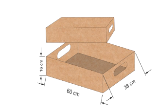
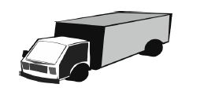
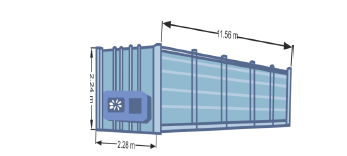
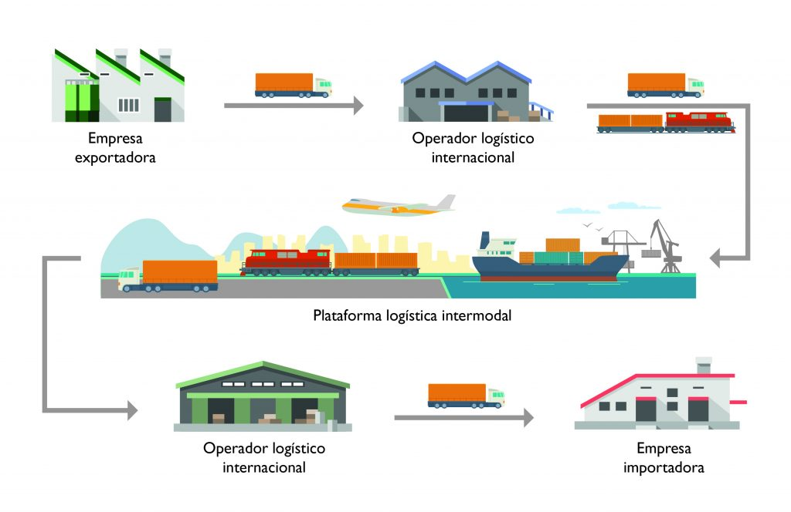
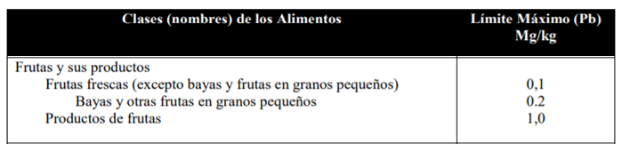
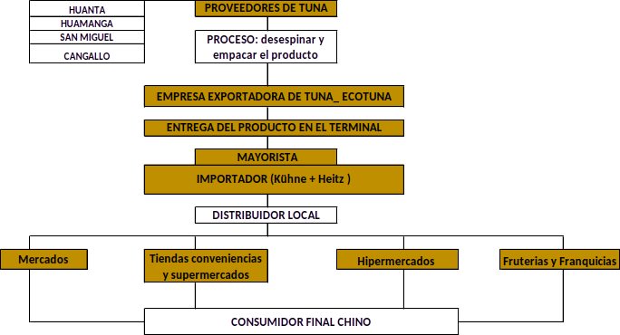

Exportación de Tuna desde Ayacucho
Un Análisis del Mercado Internacional
![]()
prickly pear export, international trade, Ayacucho Peru, China market, sustainable agriculture
Capítulo 1. Antecedentes de la empresa
Historia de la empresa
LA EMPRESA ECOTUNA S.C.R.L. es una empresa peruana dedicada a la exportación de tuna, de la más alta calidad, saludable y buen sabor. Fue creada y fundada el 23 de enero del 2020, registrada dentro de las sociedades mercantiles y comerciales como una sociedad comercial de responsabilidad limitada.
Con miras a su expansión internacional, Ecotuna proyecta realizar sus primeras exportaciones en un plazo máximo de un año. Así, la empresa busca desarrollarse y crecer, tanto en el mercado nacional como internacional y generar valor a través de la innovación en el desarrollo. Mejorar los productos que ofrece, con una rápida capacidad de respuesta, flexibilidad a los requerimientos y necesidades de los clientes, para la mejora continua de los procesos.
Nuestro equipo está comprometido con la calidad del producto, proceso de mejora continua y en la construcción de lazos comerciales a largo plazo con nuestros clientes y stakeholders.
Descripción de producto
La tuna, cuyo nombre científico es Opuntia ficus-indica, es una planta de la familia de las cactáceas la cual crece en los valles secos interandinos de Ayacucho.
Especialmente adaptada a la escasez de agua y cuya exportación no compite con las tierras agrícolas. Esta planta produce frutos comestibles que, con el tiempo, ha llegado a tener gran aceptación en el mercado. La partida arancelaria es 0810909000.
NOMBRE: Tuna, nopal, chumbera, penca
DESCRIPCIÓN: Tuna
PRESENTACIÓN: Principalmente como fresco, también puede industrializarse con la perspectiva de procesar agroindustrialmente a la elaboración de jugos y pulpas, fruta deshidratada, aceites y gomas, mermeladas y néctares.
ESPECIES Y VARIEDADES: En nuestro país, se conocen las siguientes variedades: tuna rosada.
ZONAS DE PRODUCCIÓN: La tuna en nuestro país es producida principalmente en los departamentos de Ayacucho, Huancavelica, Lima y Cusco
ORIGEN: La tuna es originaria de los Andes del Perú, Bolivia y de las planicies de México.
USOS Y APLICACIONES: Proviene de una planta con 1.5 - 2.5 m. de altura, flores color amarillo claro, pencas de 20 - 25 cm de diámetro. Es una planta susceptible a plagas y enfermedades
Capítulo 2. Plan estratégico y plan organizacional
Gestión administrativa
El objetivo de la administración es aumentar la productividad como medio para incrementar las posibilidades de competir con éxito en el mercado de Estados Unidos. La gerencia se encargará de manejar los aspectos no solo operacionales, sino también estratégicos, así como de definir el rumbo y las estrategias de la organización.
En el Organigrama de la empresa ECOTUNA, se deben destacar las siguientes instancias:
Asamblea General de delegados.
Consejo Directivo.
Gerencia.
Comités Consultivos.
Gestión de los mercados internacionales y logística exportadora
Proceso Logístico País Exportador
Se desarrollará la compra de tunas al por mayor de regiones estratégicas que producen la tuna con lo cual tendremos la capacidad necesaria para abastecer el mercado internacional.
Protocolo del producto. Después se realiza la cadena de embalaje del producto Tuna, el cual va a hacer embalado en cajas para frutas con ranura de ventilación y circulación a frío.
Protocolo de Embalaje. El embalado de tuna será en cajas para frutas, que llevara una ranura de ventilación y circulación a frio.

Protocolo de Embarque. La mercancía será cargada en el almacén de nuestra empresa ECOTUNA en el departamento de Ayacucho, que luego será llevado en camiones con destino al aeropuerto internacional del Perú donde será la carga de la mercancía de 1500 cajas a un contenedor.


Logística del Trayecto de Origen
Para la exportación de Tuna, el vendedor debe entregarle al agente de adunas la siguiente información previamente diligenciada:
· Factura de venta
· Lista de empaque
· Certificado de origen
· Mandato aduanero
Trayecto internacional
Obtención de la fecha del zarpe del avion desde el aeropuerto internacional y certificación de la fecha del ETA (Stimetion time arrive) del avion a Beijin.
Reclamación de los documentos originales en la línea aérea.
Contratación de flete aéreo internacional.
La contratación de seguro internacional será pagada por el importador de acuerdo con nuestro INCOTERM.
Trayecto destino
El destino es Beijín

Gestión económica y financiera
Como base para cualquier negocio, es necesario disponer de una fuente de capital que ayude en el inicio y posterior comienzo de la actividad. Se podrá exportar con la ayuda de las siguientes fuentes:
Fuentes ajenas: Préstamos financieros, del banco Interbank.
Fuentes propias: Aportación de los socios.
Ayudas públicas: Financiación por parte de los organismos públicos.
Plan estratégico
Misión
Exportación de Tuna a los mercados internacionales como China y la comunidad europea, superando las expectativas de nuestros clientes internacionales, en cuanto a sabor, frescura e inocuidad alimentaria.
Visión
Para el año 2023, ser reconocidos internacionalmente, como una empresa exportadora de tuna de la mejor calidad; ampliando la cartera de productos rentables y diversificados, propietarios de terrenos debidamente manejados e ingresando a los mercados más exigentes del mundo, caracterizándonos por la alta calidad y frescura de nuestros productos, generando valor y bienestar a nuestros colaboradores, a nuestros proveedores y a nuestros clientes.
Plan de marketing
Capítulo 3. Estudio de mercado internacional y plan de marketing
Análisis de la oferta
| Nº | País | %Var 18-17 | %Part 18 | Total Exp. 2018 (millon US$) |
|---|---|---|---|---|
| 1 | Mexico | 106% | 79% | 200.22 |
| 2 | Italia | 29% | 12% | 272.47 |
México al ser el país de origen de este fruto cuenta con la ventaja de tener un depositario nacional con más de 400 variedades de tuna. De un total de 40.000 toneladas de tuna que se exportan aproximadamente, Puebla aporta 8.000. Por tanto, se considera como una competencia para nuestra empresa.
| Empresa | %Var 20-19 | %Part. 20 |
|---|---|---|
| Empresa Mexbest Mexico | 20% | 17% |
| Empresa TunaMex | ||
| Pomica Perú sociedad anónima cerrada | 7% | 7 |
Mercado objetivo
Nuestro mercado de destino será China específicamente su capital Beijín, este país es uno de los principales importadores de tuna (partida frutas frescas), pues importa el 41% de tuna a nivel mundial, dicha ciudad cuenta con un estimado de 18,827,069 de habitantes al 2020 de acuerdo con los datos de la CEPAL con un aumento de 0, 47% promedio anual.
Ficha país
| País objetivo | CHINA |
|---|---|
| Área | 9.562.910 Km2 |
| Capital | Beijing - Pekín |
| Población | 1.400.050.000 |
| Idioma oficial | Mandarín |
| Ubicación geográfica | Asia |
| Moneda | Yuanes chinos |
| Tipo de cambio | 0.15 USD -0.61 PEN |
| Pbi | 12.901.904 M.€ - 15255791.88 Mill USD |
| Pbi per cápita | 9.215€ - 10.89 USD |
| Tasa de crecimiento anual | 18,3% |
| Clima | En China, los veranos son largos, tórridos, opresivos y ventosos; los inviernos son cortos, frescos y secos y está parcialmente nublado durante todo el año. Durante el transcurso del año, la temperatura generalmente varía de 10 °C a 37 °C y rara vez baja a menos de 4 °C o sube a más de 39 °C. |
| Pesos y medidas | Jin |
| Días festivos | 01 de enero, El día de año nuevo |
| 12- 17 de febrero, Año nuevo chino | |
| 3 – 5 de abril, Festival Qing Ming | |
| 14 al 16 de junio, Festival del barco del dragón | |
| El 21 de setiembre, Festival de mediados de otoño | |
| De 1- 7 de octubre, Dia nacional de la semana dorada |
Exigencias del producto
Requisitos de importación
Para las exportaciones realizadas desde/a China se deben presentar los siguientes documentos:
declaración de aduanas, contrato original (con sello), factura comercial original (con sello), lista de empaque original (con sello), certificado de salida y certificación de cuarentena, documentos de transporte, documentos de seguro, Documentos legales
Código de Registro de Aduanas (Código CR): Para todos los envíos (excepto documento y efectos personales) deben estar identificados con dicho código.
Código Armonizado (Código HS): El código HS ayuda a clasificar las mercancías y acelerar el despacho de aduanas.
Todas las empresas de los países autorizados para exportar a China deben registrarse ante AQSIQ. Los documentos de recomendación incluyen:
Información de la compañía. Nombre/dirección/ n° aprobación
Información del producto: Nombre/materias primas/aplicación
Certificado de libre venta emitido por el organismo nacional del país de origen
Los productos que arriben a China podrán ser destruidos o devueltos si se encuentra cualquiera de las siguientes condiciones:
El país de origen se encuentra prohibido de exportar a China
Los proveedores (exportadores) no cuentan con aún con la licencia china
El producto del proveedor (exportador) no se encuentra registrado
La mercancía no corresponde con el documento/licencia china
Etiquetado inapropiado del empaque de forma que no puede ser corregido.
La fecha expiración a vencido y la calidad ha sido afectada
La mercancía ha sido contaminada con excremento animal, organismos patógenos.
Barreras arancelarias
Barreras no arancelarias
Regulaciones sanitarias y fitosanitarias
Los requisitos fitosanitarios para la república popular China en cuanto a los cítricos son:
Certificación sanitaria de lugar de producción
Certificación de plantas de empaque
Certificación del inicio del tratamiento cuarentenario en frío
Etiquetado de envases. La caja debe ser limpia y sin uso, marcada obligatoriamente en inglés.
Inspección: El Departamento de Inspección y Cuarentena llevará a cabo las inspecciones de acuerdo con las disposiciones siguientes:
Verificación de Documentos
Verificación de Etiqueta
Comprobación Sensorial
Plaguicidas: La norma estipula 322 límites máximos de residuos de pesticidas
Micotoxinas: La norma GB2761-2011 “Niveles máximos de micotoxinas en alimentos” estipula los niveles máximos de Aflatoxina B1, Aflatoxina M1, Deoxynivalenol, Patulina, Ochratoxina A and zearalenona en alimentos.
Niveles máximos de contaminantes

Químicos: Esta norma establece los límites máximos en alimentos de plomo, cadmio, mercurio, arsénico, estaño, níquel, cromo, nitrito, nitrato, benzo (a) pireno, N- dimetilnitrosamina, Policlorobifenilos y 3-cloro-1, 2- propanodiol.
Normas de etiquetado
El etiquetado de alimentos preenvasados (todo alimento envuelto, empaquetado o embalado previamente, listo para ofrecerlo al consumido) se rige en China por la norma GB 7718 – 2011 “Norma General para Etiquetado de Alimentos Preenvasados.
Deberá ser de conformidad con los requisitos de las leyes estatales y reglamentos, así como con las normas de seguridad alimentaria.
Tendrá que ser claro, llamativo y duradero. Debe ser fácilmente legible e identificable por los consumidores al comprarlo.
Deberá ser verdadero, exacto, y no deberá presentar alimentos de manera falsa, exagerada, confundir a los consumidores ni con palabras o imágenes engañosas.
No deberá describirse ni presentarse con palabras, imágenes o símbolos que se refieran o se sugieran, directa o indirectamente, a cualquier otro producto.
Deberá utilizar los caracteres chinos estándares (salvo en la marca). Todas las lenguas extranjeras no pueden ser mayores que los caracteres chinos correspondientes (salvo la marca).
Normas de envases y embalajes
En China, los envases y embalajes están regulados por la ley de Seguridad Alimentaria publicada en el 2009. Los artículos N° 32 y N° 62 prohíben la importación, uso o compra de aditivos, materiales de envases que no cumplan con los estándares chinos de seguridad alimentaria.
Normas ambientales
Dentro de las Normas que actualmente están funcionando en China en el ámbito ambiental (clima y biodiversidad) para frutas y verduras frescas y fabricación de productos alimentarios (procesados) esta:
IFOAM Basic Standard/ GB 2760 – 2011
Canales de distribución

El canal de distribución de la empresa exportadora ECOTUNA será por medio del _canal mayorista, el producto ira del exportador a manos del mayorista o distribuidor general, luego pasará por un minorista o distribuidor local para llegar al consumidor final, de la siguiente forma:
Exportador———> Mayorista——–> Minoristas———> Usuario
Medio de transporte
El medio de transporte para la exportación de Tuna blanca y naranja se realiza a través del Transporte aéreo, se llevará el producto vía aérea porque es un transporte rápido, ideal para productos perecibles y con alto grado de fragilidad como la tuna.
Análisis de la demanda
Tendencia general del consumidor
Si bien es cierto que nuestro producto puede ser consumido por todos los rangos de edades, nuestra población objetivo será la de 25-54 años ya que conforman el mayor porcentaje de la población y a su ves consideramos que dentro de estos rangos de edades se encuentran las personas con más independencia económica o con familias para adquirir nuestro producto.
Nuestro producto ira dirigido a personas con ingresos de entre 16000-34000 USD pues conforman el mayor porcentaje de la población
Nuestro mercado objetivo será la población urbana centrada en la ciudad de Beijing ya que tiene el consumo per cápita anual más grande de fruta en china.
Características generales del mercado
FACTOR DEMOGRÁFICO: China cuenta con una población de 1.400.050.000 de habitantes, “siendo el país más poblado del mundo, tiene una densidad de población media, de 146 habitantes por Km2” (Datos,2018). La conformación de la población no es diversa, Tan solo un 0,07% de la población de China son inmigrantes, según los últimos datos de inmigración publicados por la ONU.
FACTOR ECONÓMICO: China es la segunda economía del mundo por volumen de PIB (15255791.88 mill USD). Además es el segundo país con mayor volumen de importaciones del ranking mundial, los compradores chinos están interesados en importar fruta de todo el mundo fundamentalmente del hemisferio sur, las que distribuye en el mercado mayorista, en tiendas de frutas como (Gogo Fruits) comercializada través de una plataforma de ‘e-commerce’, asi también como la italiana RK Growers que busca posicionarse en China con un amplio catálogo de productos, producidos en Italia, pero también en países del hemisferio sur.
FACTOR ESTILO DE VIDA: Este es un factor clave pues a medida que mejoran las condiciones de vida en China, el número de pacientes de alta presión arterial, alto nivel de glucemia y alta grasa sanguínea se incrementa cada día más, por lo que se espera que los ciudadanos cambien y reajusten sus hábitos alimenticios, así como aumenten la variedad de frutas que consumen. La Tuna podría satisfacer esta demanda ya que esta posee un alto valor nutricional, es considerado un alimento funcional ya que su consumo proporciona beneficios que fortalecen la salud , es alto en fibra ,poder antioxidante y rica en vitamina C por lo que su consumo evita el envejecimiento de los tejidos , ayuda a la prevención de la obesidad diabetes y al control del colesterol.(Organización para las Naciones Unidas para la Alimentación [FAO],2016),
FACTOR TECNOLÓGICO: Debido a que el día a día de la población China transcurre de una forma muy rápida, éstos buscan opciones que se acoplen a su velocidad, no dejando de lado la calidad de lo que desean adquirir. Por tal razón, las ventas por internet y aplicaciones móviles se han incrementado ya que esta forma de compra les garantiza el consumo instantáneo (Promperú, 2015).
Análisis del comportamiento del consumidor
Los consumidores chinos están cada vez más concienciados hacia hábitos de vida más saludables, por el aumento de enfermedades vinculadas a los estilos de vida, actualmente se observa una preocupación entre la población por incluir en sus dietas alimentos más saludables, entre los que destacan los productos vegetales frescos y, en especial, las frutas. La Tuna podría satisfacer esta demanda ya que “la tuna posee un alto valor en fibra ,poder antioxidante y es rica en vitamina C por lo que su consumo evita el envejecimiento de los tejidos , ayuda a la prevención de la obesidad diabetes y al control del colesterol.(Organización para las Naciones Unidas para la Alimentación” (FAO,2016).Por otro lado, es preciso indicar que “el consumidor Chino está dispuesto a probar productos novedosos y de sabores regionales, ya que éstos les otorgan una mayor variedad al momento de elegir un alimento pero sin embargo es necesario que cuando una fruta es ‘desconocida’ para el grueso de la población, hay que facilitarle la tarea de comerla. Y si viene bien presentada, mucho mejor” (Redagricola,2018).Por otro lado de acuerdo a Bain & Company, cerca del 70% de los compradores ‘online’ escribe ‘reviews’ sobre los productos que ha comprado, mientras que el 90% de los compradores lee ‘reviews’ antes de realizar una compra, El consumidor chino es cada día más exigente y cada vez pide más calidad, tiene predilección por frutas lustrosas, con colores vivos y uniformes.
Además, existe una demanda de fruta fresca fuertemente relacionado con el mercado del regalo, ya que las frutas se usan como obsequio en las principales fiestas del país, en bodas y celebraciones, para pacientes en hospitales y en ocasiones especiales. Por este motivo, la mejor época para la venta de fruta importada es la celebración del Año Nuevo Chino, entre los meses de enero y febrero; y el Festival de Otoño entre septiembre y octubre. Durante estas fiestas se comercializa un gran volumen de fruta importada.
Capítulo 4. Plan de operación
Ficha de insumo producto
Insumos
Materia prima: Tuna que es alto en fibra, tiene antioxidante y rica en vitamina C por lo que su consumo evita el envejecimiento de los tejidos, ayuda a la prevención de la obesidad diabetes y control del colesterol.
Personal
- Mano de obra indirecta
- 1 gerente
- 1 secretaria, recepcionista
- mano de obra directa
- 5 encargados del área de empaque
En conclusión, para el normal funcionamiento de la empresa se requerirán 7 personas en su totalidad, para administración, operación, seguridad y limpieza
Costos de producción
| Costo variable | Soles |
|---|---|
| Materia prima e insumos | 12672 |
| Mano de obra | 100 |
| Total costo variable | 12772 |
| Costo total | 12772.00 |
| Unidades | 1500 |
| Costo variable unitario | 8.51 |
| Costo total unitario | 8.515 |
| Margen de ganancia 80% | 6.8117 |
| Precio | 15.33 |
| Precio exportador | 22989.6 |
Cadena de producción
Flujo del proceso productivo de la tuna
Recepción de la tuna cosechada
Limpieza y cepillado
Inspección y selección
clasificación
Colocación del papel enserado
Colocación en cubetas
Colocación cajas
Carga al camión
Entrega en el aeropuerto
Capítulo 5. Gestión exportadora
Análisis de Costos y precios de exportación
| Detalles | I | Producto: nombre técnico o comercial | TUNA O NOPAL |
|---|---|---|---|
| Información básica del producto | II | Posición arancelaria del país exportador | 810909000 |
| Posición arancelaria del país importador | 81340 | ||
| III | Unidad comercial de venta | KILO | |
| IV | Valor por unidad comercial | $0.63 | |
| V | Empaque | CAJAS | |
| Dimensiones de cajas | 0.600.380.16 | ||
| Información básica del embarque | VI | Origen/país punto de carga | Ayacucho/Callao |
| VII | Destino /país punto de desembarque | Beijing/China | |
| VIII | Peso total | 55000 | |
| IX | Unidad de carga | CAJAS | |
| X | Unitarización | UNITARIZADO 1 CONT.X40”RF | |
| XI | Cantidad total de cajas | 2500 | |
| XII | Unidades comerciales | 52500 | |
| Otra información de importancia | XIII | Valor total mercancía | $33,011.36 |
| XIV | Forma de pago y tiempo | Anticipado giro directo | |
| XV | Tipo de cambio actualizado | 3.96 |
| FCA | |
|---|---|
| Total exportador | 167704 |
| Total importador | 1401434 |
| Costo unitario exportador | 67.082 |
| Precio unitario al importador | 134.163 |
| Precio total al importador (Valor Factura) | 335,408 |
Modalidades de pago
Forma de pago
La empresa ECOTUNA tendrá la modalidad de pago por adelantado del 50% y como institución intermediaria será INTERBANK, en vista de que esta forma de pago es la más segura teniendo en cuenta aspectos de riesgo.
| Medio/forma de pago | Riesgo exportador |
|---|---|
| Pago por adelantado | Ninguno |
| Carta de crédito | Discrepancias documentarias |
| Cobranza documentaria | No pago /no aceptación |
| Cobranza simple | Solvencia del importador |
| Cuenta | Máximo |
Entrega de mercancía
Según el ministerio de desarrollo agrario y riego con el incoterm FCA, Free Carrier (Libre Transportista) el exportador entrega la mercancía en el lugar acordado por ello la empresa se compromete a cumplir sus obligaciones como exportador.
Cobro
La modalidad de cobro de la empresa ECOTUNA que corresponde al 50% se realizara de forma efectiva después de la transferencia de la mercancía a nuestro cliente y en el mismo lugar
Riesgos
El Seguro de Crédito a la Exportación es un mecanismo de coberturas que protege a los exportadores contra los Riesgos Ordinarios y Extraordinarios del Comercio Internacional permitiendo a los mismos resarcirse de los daños ocasionados por determinados acontecimientos que pudieren impedir el cobro o recuperación de los créditos acordados a sus compradores en el exterior. En este sentido la empresa Ecotuna S.C.R.L contrata a COFACE for trade una compañía Aseguradora para obtener un seguro de crédito a la exportación, el cual cubrirá los riesgos de rescisión o resolución del contrato y el riesgo de impago.
- Información adicional:
Datos de importadores:
| Empresa | SOUSA RIBEIRO AGRAO TRADE EXPORT |
|---|---|
| Representante | CORREA MIRANDA SOUSA ALFREDO EDUARDO |
| Industria | Comercio de frutas y plantas medicinales |
| Escala comercial | Empresas líderes de alto potencial |
| Dirección | Av. Stanislas Pryl, 11145435-000 Ituberá / BA Brasil |
| Productos | Guaraná, cacao, pimentón brasileño, pasiflora, secula de topioca, pupunha, nuez de Brasil y aceites esenciales. |
| Código hs | 020714SUDU817722700 |
| Cantidad de empleados | 1001 |
| Teléfono fax | +55 73 3256-2705 |
| Sitio web | Atendimento@sousaribeiro.com.br |
| Ranking de mercados top | |
| Estados unidos | |
| Argentina | |
| Reino unido | |
| Volumen de importación | USD$125 millones |
| Empresa | Maripa Importacao e Exportacao |
|---|---|
| Representante | Tatiana amaral torrinha balducci 22-sócio |
| Industria | Concervas de frutas y frutas |
| Escala comercial | Líderes de alto potencial |
| Dirección | Extensión Unifap Y / N KM 02 Highway jk Barrio: Jardim Marco Zero Municipio: Macapa Estado: AP |
| Productos | Cereza, mango, manzana, quiwi, pomelos |
| Código hs | 24.283.272/0001-04 |
| Cantidad de empleados | 1123 |
| Teléfono fax | (96) 9181-3939 / (96) 9135-0324 |
| Sitio web | Https://cnpjs.rocks/cnpj/24283272000104/maripa-importacao-e-exportacao-ltda.html |
| Ranking de mercados top | |
| Argentina | |
| Perú | |
| México | |
| Volumen de importación | US$ 138 millones |
Ferias
Fruit & Tech
Fruit & Tech brinda al mercado productor de frutas, verduras y derivados, tecnología y logística todas las condiciones para la generación de negocios, ampliación de contactos comerciales, apertura al mercado externo y aumento de ventas.
Con amplia presencia de compradores internacionales, el evento destaca las rondas de negocios, seminarios, lanzamiento de productos, difusión de técnicas y nuevas tecnologías, entre otras atracciones.
Frutal
Frutal se celebra anualmente en diciembre y atrae a visitantes de todo Brasil y de otros países, que asisten al evento para conocer las últimas novedades del sector de las frutas, las flores y la agroindustria. El evento reúne productores, importadores y proveedores de servicios para el sector, además de técnicos, entidades públicas, maquinaria y demás profesionales de la cadena de suministro.
Expo Fruit
El Exprofuit es una de las ferias más importantes en el sector de las frutas que está sucediendo en Brasil. Pretende reunir a los productores de frutas de regadío y de otros eslabones de la cadena, como importadores, exportadores, distribuidores, proveedores, y las delegaciones de países como Francia, Italia, Alemania, España, Países Bajos, República Checa, Bélgica, Noruega, EE.UU., Rusia, entre otros para realizar negocios.
Capítulo 6
Análisis comparativos de precios de Brasil
| Costos | Documentación | CPT |
|---|---|---|
| Costos de producción | FACTURA COMERCIAL | 22,990 |
| Flete terrestre 40’s (17 unidades) | CARTA PORTE | 1,000 |
| Derechos de trámite aduanero | DTA-PEDIMIENTO DE X | 1,839 |
| Honorarios de AA Exp | CUENTA DE GASTOS AA | 395 |
| Maniobras de carga | TICKET DE MANIOBRAS | 700 |
| Total exportador | 26,924 | |
| Costo unitario exportador | 17.9491787 | |
| Precio total al importador precio total. | 35.8983573 | |
| DESCRIPCIÓN | PRECIO UNITARIO CPT BRASIL US$ | CANTIDADES UNIDADES | TOTAL CPT |
|---|---|---|---|
| MODELO A | 17.94917867 | 1500 | 26923.77 |
| TOTAL CPT Brasil | 26923.77 | ||
| FLETE AÉREO | 1154.74 | ||
| SEGURO | 592.5 | ||
| TOTAL CIF | $ 28,671.01 |
_
| CTM(US$) | $ 39,959.09 |
|---|---|
| FACTOR DE CALCULO | 1.48 |
El costo de la tuna se incremento en 0.48 céntimos de soles
| Factor de distribución | Costo unitario de importación | P margen de ganancia 30% | Iva 19% | Precio soles | Precio-dólares |
|---|---|---|---|---|---|
| 1.48 | 26.64 | 34.63 | 6.58 | 41.21 | 10.43 |
| Precio promedio | 41.21 | $ 10.43 | |||
| Precio internacional | 11.7721519 |
Si sería rentable pues nuestro precio promedio es 10.43 dólares el cual es menor al precio del mercado internacional de 11.72 dólares , por lo que somos competitivos en el exterior con un margen de ganancia de 100%.
Publicaciones Similares
Si te interesó este artículo, te recomendamos que explores otros blogs y recursos relacionados que pueden ampliar tus conocimientos. Aquí te dejo algunas sugerencias:
- El Aborto Lee sin conexión PDF
- Comandos De Google Assistant Lee sin conexión PDF
- Comandos De Blogdown Lee sin conexión PDF
- Gestion Publica Y Administracion Publica Lee sin conexión PDF
- Reformas Y Modernizacion De La Gestion Publica Lee sin conexión PDF
- Economia Agraria Lee sin conexión PDF
- Impacto Del Cambio Climatico Lee sin conexión PDF
- Cualidades De Los Servidores Publicos Lee sin conexión PDF
- La Economia Peruana Entre 1970 1990 Lee sin conexión PDF
- Economia Regional Lee sin conexión PDF
Esperamos que encuentres estas publicaciones igualmente interesantes y útiles. ¡Disfruta de la lectura!
Cómo citar
@online{achalma2021,
author = {Achalma, Edison and Chocce, Semnia and Durand, July and
Gamboa, Brenda and Galindo, Alejandrina},
title = {Exportación de Tuna desde Ayacucho},
date = {2021-07-13},
url = {https://achalmaedison.netlify.app/blog/posts/2021-07-13-plan-de-negocio-exportacion-de-tuna/},
langid = {es},
abstract = {This study explores the strategic and ethical
considerations of exporting prickly pear (tuna) from Ayacucho, Peru,
to international markets, with a focus on Beijing, China. It
examines the operational framework of Ecotuna S.C.R.L., a Peruvian
company established in 2020, aiming to penetrate global markets
within a year. The analysis includes market demand in China,
logistical processes, and economic viability, highlighting the
fruit’s nutritional value and its alignment with shifting consumer
preferences toward healthier diets. Ethical implications, such as
sustainable production and fair trade, are addressed in the context
of contemporary societal needs. Drawing on trade data and consumer
trends, the research underscores the potential for Ayacucho’s tuna
to compete with leading exporters like Mexico while fostering local
development. The study concludes by outlining key challenges and
opportunities for sustainable export growth.}
}